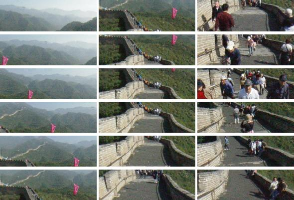

この成果展開は，総務省が執り行っているアジアブロードバンド計画の一環として，2003年度に日中間で共同作業実験を行ったものである．この実験の目的は，1)日中間で多言語コラボレーションツールを用いて意見交換や技術移転を行う，2)１のツールや直接指導によって映像都市空間システムによるデジタル北京の構築を図ることである．
1. 非同期型多言語コラボレーションツールを使った技術移転支援
本研究では，日中両方の言語で表示される掲示板を有する「非同期型多言語コラボレーション環境」（TransBBS V1.1：図１）を構築し，この環境を利用して，日中間でコラボレーションを行い，コラボレーションにおける相互理解の過程，進捗具合を調査・評価した（日本側参加者18名，中国側参加者16名）．これにより，日中間のコラボレーションにおいて，利用者が意図した通りの翻訳結果を返すことができないなどの機械翻訳の不備を補完するために利用者側で機械翻訳に適した例文を参照して文章を作成するツールを用いるといった支援機能及び感情コミュニケーション支援機能の有効性を検証した．
コラボレーション結果を調査分析した結果，利用者が満足する翻訳精度を提供することができないが，参加者間で機械翻訳に適したメッセージになるよう精錬し，お互いの理解が正しいかを確認しあうなど，利用者側が機械翻訳を介した異文化コラボレーションに適応していった過程が見て取れた．また，感情コミュニケーション支援機能は，メッセージの内容理解を助け参加者間の親近感や参加意欲を増すことがわかった．

図１．日中間共同作業で使用した非同期型多言語コラボレーションツール
2. 映像都市空間システムによるデジタル北京プロトタイプの構築
本研究では，中国への映像都市空間システムに関する技術の提供を目的とし，日中間のコラボレーション作業を通して，デジタル北京のプロトタイプを構築した．このコラボレーション作業の一部では，非同期型多言語コラボレーションツールを利用し，日中作業者の意思疎通を図った．このプロトタイプを構築するにあたり，中国側作業者は，北京大学情報科学センターの査紅彬教授の研究室所属の学生６名である．彼らに対する具体的な技術指導は，日本側作業者が中国へ赴き，直接指導を行った．本実験では，観光名所として有名な長城の八達嶺と，北京大学構内数箇所をモデル化した．長城の一例を図２に示す．

図２．デジタル長城（左上から右下の順に時系列に表示）
文献：
Tomoko Koda. Interpretation of Emotionally Expressive Characters in an Intercultural Communication. Eighth International Conference on Knowledge-based Intelligent Information & Engineering Systems(KES2004), Wellington, New Zealand, 2004. (in print)
Satoshi Koizumi and Hiroshi Ishiguro. Town Digitizing:Omnidirectional image-based Viratual Space, International Conference on Communities and Technologies 2003 Digital Cities 3 Workshop, Part 1, pp.19-30, 2003.
連絡先：
京都大学大学院情報学研究科 石田 亨 ishida at i.kyoto-u.ac.jp
科学技術振興機構 デジタルシティ研究センター 神田智子 koda at digitalcity.jst.go.jp，小泉智史 satoshi at digitalcity.jst.go.jp